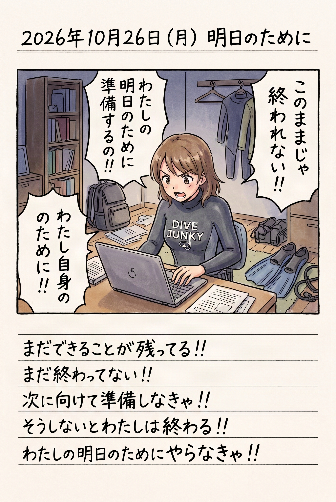

The road Orz passed by 2026 年 10 月
10 月 26 日 ( 月 )
Dive #234 絵日記 明日のために

やれること（試せること）がまだ残っているのに、それをやらない自分が許せないから、だからやっています。
たぶんそういうことなんだと思います。
付き合わせてしまっているインストラクターには伏してお詫びします。そして心から感謝します。
そして、たぶん、誰かのための何かを残せると思うから。
- Category :
- #Records of Orz's Road
- #ダイビング
- #スクーバダイビング
- #アダプティブ・スクーバ・ダイビング
- #障がい者ダイビング
- #再トレーニング
- #再起に向けて
- #明日へ
- #明日への記録
Dive #235 でも遠くない未来にやってくるであろうこと
復帰に向けてがんばってるんですけど、前提条件がやはりあるので、いつかどこかで線は引かなければならない。そう思っています。やはり健康だった 30 歳の頃には戻れないので。
いつかどこかで線を引く日がくる。しかも来年辺り。
わかってはいるのです。
- Category :
- #Records of Orz's Road
- #ダイビング
- #スクーバダイビング
- #アダプティブ・スクーバ・ダイビング
- #障がい者ダイビング
- #再トレーニング
- #再起に向けて
- #明日へ
- #明日への記録